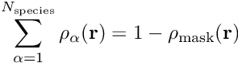
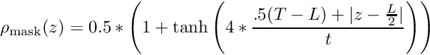
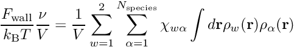
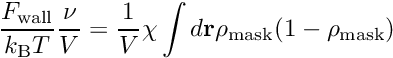

|
PSCF v0.9
|
3.8 Space Groups (Prev) 4 Developer Information (Next)
A "thin film constraint" can be imposed on the system by modifying the iterator block of the parameter file. The thin film is modeled as a polymer melt confined between two parallel walls with a fixed distance between them. The walls are represented in the unit cell as a "mask" that occupies space in certain regions of the cell according to a pre-defined functional form. This mask technique allows for the periodic boundary conditions and MDE solver to be used without any modification; the modifications are contained entirely to the iterator.
The mask is included in the system by modifying the incompressibility constraint as follows:

where the summation is over all distinct monomer species, ρα(r) is the volume fraction of species α at position r, and ρmask(r) is defined as:

Here, we have defined the mask density as a function of z, which we define as the position along the direction normal to the walls. L is the length of the unit cell in this direction, and T is the total thickness of the wall in this direction. t defines the rate at which ρmask(z) decays from 1 to 0 when passing from the wall region into the film. If t is small, the calculation will require high spatial resolution to converge, which can be computationally prohibitive, but a sufficiently large t will not be able to accurately model a rigid wall. A common compromise in literature is to choose 0.15Rg ≤ t ≤ 0.5Rg, where Rg is the radius of gyration of the polymer (for a one-component system).
The introduction of this mask has a significant effect on the symmetry of the unit cell, so the choice of unit cell and space group in the parameter file must be made with care. This is explained in great detail in the Space Groups section below. Also, although it is not necessary, we impose an additional constraint on the unit cells used for thin film calculations: one lattice basis vector must be oriented normal to the walls, and all other lattice basis vectors must be parallel to the walls. For example, if one were to use a hexagonal unit cell, the walls must be parallel to the a and b lattice vectors, because this is the only orientation of the walls for which the third lattice vector is normal to the walls. Additionally, the length of the lattice vector that is normal to the walls is not allowed to vary, so the thickness that the user defines will be maintained throughout the calculation even if the user chooses to have a flexible unit cell.
For further reading on thin film SCFT, see the two publications listed below, on which our implementation is largely based:
In the parameter file, the thin film constraint is included by modifying the iterator block. First, the word "Film" is appended to the end of the iterator name (e.g., "AmIteratorFilm" instead of "AmIterator"). Inside of the iterator block, the normal iterator parameters are listed first, followed by several additional parameters to define the mask. For now, AmIterator is the only iterator that has been implemented in the software, so the only thin film iterator is AmIteratorFilm. An example is given below to show how a thin film is written into the parameter file:
In the example, we have constructed a parameter file that might be used to represent an AB diblock polymer self-assembled into a bcc structure confined to a thin film that is ~2 unit cells thick. This will be explained in more detail below. Also, see our parameter-level breakdown of the components of an Pspc::AmIteratorFilm block.
First, we draw your attention to the Domain block. Notice that this differs significantly from the Domain block that would be expected for a bcc structure in a neat melt. The space group has been downgraded from the cubic Im-3m group to tetragonal P4/mmm. See the Space Groups section below for more information about determining the appropriate space group symmetry for a thin film. Also notice that we have chosen specific and intentional values for the c lattice vector and the mesh discretization in that direction, which will be discussed further below.
Now, we proceed to the AmIteratorFilm block. The first four parameters in this block define the AmIterator object and do not pertain to the thin film constraint (from maxItr to isFlexible). Then we get to the variables that define the mask. The first required variable is normalVecId, indicating which of the 3 lattice basis vectors is oriented normal to the walls. The input should be either 0, 1, or 2, corresponding to the a, b, or c lattice vectors, respectively. In the example above, the c vector is normal to the wall. Importantly, the two vectors that are not normal to the wall (a and b in the example above) must be parallel to the wall. So, if c is normal to the wall, then the unit cell angles α and β must both be 90°. The software will throw an error if this condition is not met.
The next required inputs are interfaceThickness and wallThickness, which correspond to t and T in the expression for ρwall(z) above. These values are defined in the same units as other length inputs (unit cell parameters, segment lengths). In the example, we have chosen t to be 0.1, or 0.25Rg based on information from the Mixture block, and we have chosen T to be 0.2, or 0.5Rg. Let us also briefly consider the parameter L (the length of the unit cell in the direction normal to the wall) in the context of the example parameter file above, now that we have defined T. Since we have declared that the c lattice basis vector is orthogonal to the wall, the length of c is equivalent to L. The parameter L is thus defined in the Domain block to be 4.2. However, because of the presence of the walls, the thickness of the actual polymer/solvent film is instead equal to L–T, or 4.0. If we expect that the bcc structure will have a cubic lattice parameter of ~2.0, then we are effectively targeting a film that is two unit cells thick.
Next, there is an optional input array chi. This allows the user to define a Flory-Huggins-like interaction parameter between each monomer species and the walls. If chi is not specified, then all values are set to zero (an athermal wall). For a system with n monomer species, the chi array will be n rows and two columns. Each row corresponds to a single monomer species, in the same order that they are listed in the monomers[ block. The first column represents the chi parameter between wall 1 and each monomer species, while the second column represents the chi parameter between wall 2 and each monomer species (we define wall 1 to be the wall that intersects the origin). In the example above, we have two monomer species, with species indices 0 and 1. Wall 1 interacts slightly more favorably with the monomer species with index 1, while wall 2 interacts with a relatively strong favorability for species 1. If the two columns in chi are identical, then the walls are said to be "chemically identical."
The additional contribution to the overall free energy (per monomer) of the system arising from wall-polymer and wall-solvent interactions, which we will call Fwall, are calculated based on the chi values specified in the parameter file as follows:

where the index w denotes the wall (either wall 1 or wall 2), ν is the monomer reference volume, χwα is the chi interaction parameter between wall w and species α that is input from the parameter file, and ρw(r) is the volume fraction of wall w at position r (note that this differs from ρmask(r) above, which represents the volume fraction of both walls). It is important to note that the volume V in this expression is not the volume of the full unit cell, but rather the volume of space that is accessible to the polymers/solvents.
From an implementation standpoint, we actually model the chemical interactions between walls and polymers as an external field that is imposed on the system, affecting each monomer species differently. The shape of the external field in real space is identical to the density field of the wall, and its magnitude is dictated by the chi array defined by the user.
Finally, there are two optional inputs that can be used to write the mask field to a file. wallBasisOutFile and wallRGridOutFile specify the path/filename to which to write the mask field in symmetry-adapted basis format or real-space grid format, respectively. This can be useful if, for example, the user wishes to plot/visualize the shape of the wall in addition to the shape of the density profiles for each monomer species.
We also briefly draw your attention to the Sweep block at the bottom of the example parameter file. To make it easier to efficiently explore the state space of thin film polymer systems, we have introduced two sweep parameters that are specific to thin film systems. First is cell_param, which allows for a sweep to be performed on any lattice parameter. The syntax for this sweep parameter is cell_param i delta where i is the index of the lattice parameter to be swept (starting from 0) and delta is the desired change in this parameter over the entire sweep. Note that i refers to the index of the parameter in the array that is input in the unitCell line of the parameter file. So, in the example above, i can only be 0 or 1 because there are only 2 lattice parameters specified on the unitCell line.
The second sweep parameter for thin films is chi_wall, which allows the user to sweep any of the values in the chi array that is input in the iterator block. The syntax for this sweep parameter is chi_wall i j delta where i and j specify the row and column indices of the chi value that will be swept (indexing starting from 0), respectively, and delta is the desired change in this parameter over the entire sweep. i must be less than n_monomer, and j must be either 0 or 1. In the example parameter file above, we show how to sweep the chi parameter in row 0, column 1, although we don't actually change the value (delta is 0.0) because that would break the symmetry of the space group that we've chosen, so the chi sweep is only included for illustrative purposes.
It is important to note that the equation for Fwall above has an inherent linear dependence on t. For instance, consider a homopolymer melt where ρpolymer = 1 - ρmask everywhere, and both walls are chemically identical. Then,

Using the expression for ρmask above, one can show that the integral of ρmask(1-ρmask) is proportional to t. As such, the strength of the interactions between polymers/solvents and walls is dependent not only on χαw but also on t. Because of this, it is strongly recommended to use the same value of t for all calculations that are to be compared to one another.
When walls are added into the system, the user can still choose whether to fix the unit cell parameters or allow them to vary, but the implementation is slightly different. Specifically, the length of the lattice basis vector that is orthogonal to the wall (4.2 in the example above) is fixed, in order to force the thin film to maintain a constant thickness throughout the iteration process. Furthermore, we require that the other lattice basis vector(s) remain parallel to the walls. This implies the following:
normalVecId. The length of the lattice basis vector that is normal to the wall (the vector indicated by normalVecId) is held fixed, and the remaining two angles are fixed at 90°. This behavior is implemented automatically. If the user specifies that lattice parameters may vary, then the software will decide which lattice parameters are actually allowed to vary based on normalVecId and unitCell. If the user tries to define a unit cell that is incompatible with the rules above (e.g., a 2D unit cell with α ≠ 90°), the software will throw an error.Although we are imposing a thin film constraint on the system, we still use periodic boundary conditions in all directions so that the symmetry-adapted basis functions used for bulk (non-thin film) calculations can be used without modification. However, the presence of two fixed walls in the system reduces the number of allowed symmetry operations for these unit cells, because the only allowed symmetry operations are those that leave the walls unchanged. Thus, the selection of the appropriate space group for a thin film requires more substantial thought than is the case for bulk systems.
The appropriate space group for a desired system can be identified by looking at the symmetry operations for the space group that describes the system in the bulk, removing those operations that are not allowed in the thin film (which differ depending on whether the walls are identical or not), and then finding the space group that contains only those symmetry operations that remain.
If, for example, the walls are in the x-y plane (param file contains "normalVecId 2.") and the two walls are chemically identical, then symmetry operations that change z to -z are allowed because the walls are mirror images of each other. All other changes in z (e.g., from z to z+1/2 in reduced coordinates) are forbidden, because these operations would result in the wall being moved to a different location than where it started. If the walls are chemically dissimilar, then the only symmetry operations that are permitted are those that leave z unchanged. The user is directed to online resources at https://www.cryst.ehu.es/ and http://img.chem.ucl.ac.uk/sgp/mainmenu.htm which provide, in great detail, tabulations of the symmetry operations for all space groups.
We can clarify further with an example, again considering the parameter file above for a thin film bcc structure. The space group for bcc in the bulk is Im-3m. We are imposing a wall that is parallel to the x-y plane, so the allowed symmetry operations for our thin film can only have (z -> z) or (z -> -z) transformations of the z coordinate (and the latter is only allowed for chemically identical walls). On this page we can see the 96 symmetry operations for the Im-3m space group, and only 16 of them are allowed for the system with the wall present.
We then search for a space group with only these 16 symmetry operations. It will be in the tetragonal crystal system, because that is the shape of the unit cell that we expect for the thin film bcc structure. After searching through the tetragonal space groups, we find that P4/mmm is the space group we are looking for.
An important detail to note is the difference between the space group and the unit cell. The unit cell shape only defines the lattice vectors along which the system has translational symmetry. By contrast, the space group defines all of the other allowed symmetry operations in the system, some of which are only allowed for unit cells of a certain shape. For example, a cubic space group (the highest possible symmetry) represents a set of symmetry operations that can only be applied to a cubic unit cell. However, this does not mean that a cubic unit cell must have cubic symmetry—it can also have the symmetry of any of the space groups associated with crystal systems of lower symmetry (e.g., tetragonal). In the context of PSCF, this means that you can choose a unit cell and a space group that belong to different crystal systems, as long as the symmetry operations of that space group are all applicable to that unit cell. For example, a tetragonal unit cell could be used with a monoclinic space group. As another example, the triclinic space group P_1, which has no symmetry operations other than the identity, can be used alongside all possible choices of unit cell.
In the thin-film bcc example discussed above, it would be fine to declare a cubic unit cell with the P4/mmm space group; this would be used to simulate a bcc structure that is slightly less than 1 unit cell thick (because of the space occupied by the walls). However, to model a film with different thickness, a tetragonal unit cell is required, which keeps the a and b lattice basis vectors the same length but allows c to vary. An orthorhombic unit cell, however, would be incompatible with the P4/mmm space group; P4/mmm requires that a and b are the same length.
This brings up a final important consideration when setting up a PSCF system: the space group contains inherent choices of which lattice parameters are allowed to vary independently and which are not, which should be considered when choosing normalVecId. Tetragonal unit cells must have |a|=|b|, so the natural choice of normalVecId is 2, so that the lattice basis vector that is perpendicular to the film (c) is allowed to vary independently. In fact, the space group P4/mmm is not compatible with a normalVecId value of 0 or 1.
In 3D systems, it is recommended to choose 2 for normalVecId, except in the case of a monoclinic unit cell, which is more compatible with a normalVecId value of 1. This is because β is the only angle allowed to vary in a monoclinic unit cell, but a choice of 0 or 2 for normalVecId would force β to be 90° and thus force the unit cell to be stuck in an orthorhombic shape.
We intend to develop a tool to generate an initial guess for thin film geometries using the form factor method and the level set method (see Arora, et al. (2016), Macromolecules, 49, 4675) for arbitrary particle and network phases. However, in the meantime, the recommended technique for generating an initial guess is to first converge the desired morphology as a bulk calculation, and generate a converged solution in rgrid format. Then, create a new rgrid with the desired mesh size/shape by duplicating the existing data periodically along any of the lattice basis vectors. For our bcc example above, we could take a 32x32x32 bcc solution in rgrid format, duplicate the data along the z direction to generate a 32x32x64 mesh of bcc data, and then add 4 more layers of data points in the z direction (2 on top and 2 on bottom) to represent the interior of the walls, all of which should have zero concentration for all species (as an initial guess). This leaves us with a 32x32x68 initial guess in rgrid format for the bcc thin film, which can subsequently be converted into an initial guess for the omega field in symmetry-adapted basis format by using the RGRID_TO_FIELD and RHO_TO_OMEGA commands in the command file.
Here we present a comprehensive list of the rules determining permitted/forbidden choices of unit cell and space group in a thin film system, which have been alluded to in the above discussion.
The systems that are compatible with the thin film constraint must obey the following rules:
A comprehensive list of allowed space groups is given below. The entries that are listed in bold are those that are allowed for chemically dissimilar walls; all other entries are only allowed for chemically identical walls. Note that, in 3D, every bolded space group corresponds to a 2D plane group symmetry; there are exactly 17 space group symmetries for chemically dissimilar walls in 3D, just as there are 17 plane group symmetries for 2D unit cells.
In constructing this list, we assumed that normalVecId is set to 2 for orthorhombic, tetragonal, trigonal, and hexagonal space groups. For other choices of normalVecId, the allowed space groups will likely differ.
P_1 P_-1 p_1 p_2 p_m (normalVecId must be 1 if walls are chemically dissimilar) p_g (normalVecId must be 0) p_2_m_m p_2_m_g (normalVecId must be 1) P_1 P_-1 P_2 P_1_m_1 P_1_c_1 P_1_2%m_1 P_1_2%c_1 P_1_21_1 (normalVecId must be 0 or 2) C_1_2_1 (normalVecId must be 2) P_1_m_1 (normalVecId must be 0 or 2) P_1_c_1 (normalVecId must be 0) C_1_m_1 (normalVecId must be 2) P_1_2%m_1 (normalVecId can be 0, 1, or 2) P_1_21%m_1 (normalVecId must be 0 or 2) C_1_2%m_1 (normalVecId must be 2) P_1_2%c_1 (normalVecId must be 0 or 1) P_1_21%c_1 (normalVecId must be 0) P_2_2_2 P_21_21_2 C_2_2_2 P_m_m_2 P_m_a_2 P_b_a_2 C_m_m_2 P_m_m_m P_b_a_n:1 P_b_a_n:2 P_m_m_a P_b_a_m P_m_m_n:1 P_m_m_n:2 C_m_m_m C_m_m_a P_4 P_-4 P_4%m P_4%n:1 P_4%n:2 P_4_2_2 P_4_21_2 P_4_m_m P_4_b_m P_-4_2_m P_-4_21_m P_-4_m_2 P_-4_b_2 P_4%m_m_m P_4%n_b_m:1 P_4%n_b_m:2 P_4%m_b_m P_4%n_m_m:1 P_4%n_m_m:2 P_3 P_-3 P_3_1_2 P_3_2_1 P_3_m_1 P_3_1_m P_-3_1_m P_-3_m_1 P_6 P_-6 P_6%m P_6_2_2 P_6_m_m P_-6_m_2 P_-6_2_m P_6%m_m_m
3.8 Space Groups (Prev) 3 User Guide (Up) 4 Developer Information (Next)